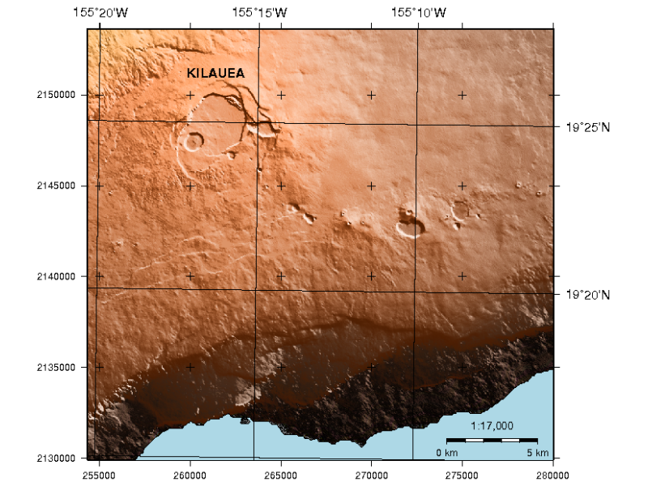

GMT¶
Általános térképező eszközök¶
A GMT a programok egy gyűjteménye, mely lehetővé teszi (x,y) és (x,y,z) adatok kezelését (beleértve a szűrést, a trend illesztést, rács készítést, vetületi átszámítást, stb.) és PostScript fájlt (EPS) állít elő, az egyszerű x-y rajzoktól a szintvonalas térképeken keresztül a mesterségesen megvilágított felületekig, a 3-D perspektív megjelenésig, fekete-fehérben, szürke árnyalatosan, sraffozási mintákkal és 24 bites színekkel.
A GMT számos elterjedt vetületet ismer, emellett lineáris, logaritmikus és hatvány skálázás állítható be és olyan adatokat tartalmaz mint a tenger partvonalak, a folyók és a politikai határok.
{kind=link}
Alapfunkciók¶
- Folyóirat minőségű kartográfia.
- Gridding and contouring functions.
Részletek¶
Honlap: https://gmt.soest.hawaii.edu
Licenc: GNU General Public License (GPL) version 2
Szoftver verzió: 5.4.5
Támogatott platformok: GNU/Linux, Mac OSX, MS Windows
API interfészek: parancssor
Támogatás: https://gmt.soest.hawaii.edu/projects/gmt/boards/1